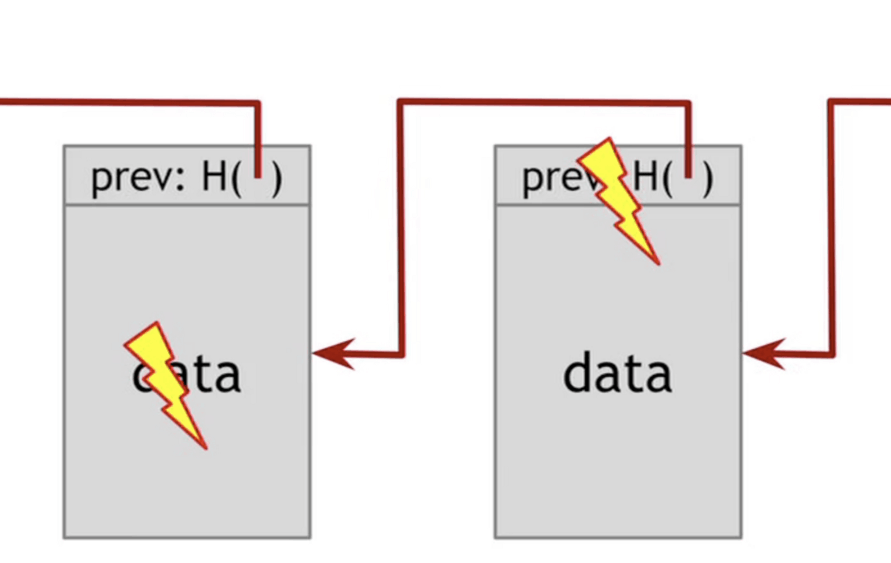
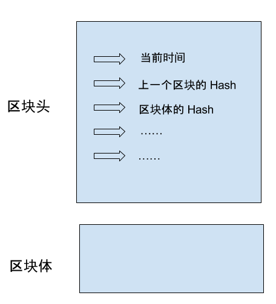
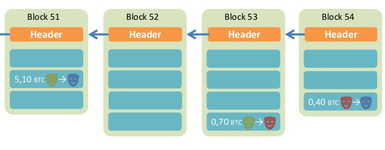
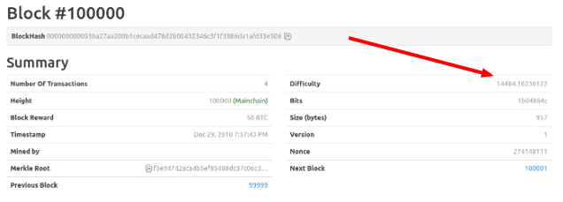
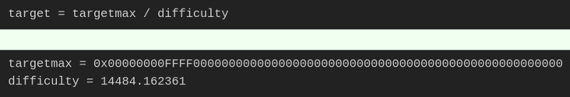
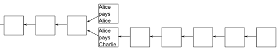

区块链入门（作者：阮一峰）
区块链是眼下的大热门，新闻媒体大量报道，宣称它将创造未来
虽然它不是很难的东西，核心概念非常简单，几句话就能说清楚 希望读完本文，你不仅可以理解区块链，还会明白什么是挖矿、为什么挖矿越来越难等问题
本质
区块链是什么？一句话，它是一种特殊的 分布式数据库

- 区块链的主要作用是 储存 信息：任何需要保存的信息，都可以写入区块链，也可以从里面读取，所以它是数据库
- 任何人都可以架设服务器，加入区块链网络，成为一个节点。区块链的世界里面， 没有 中心节点 ，每个节点都是平等的，都保存着整个数据库
- 你可以向任何一个节点，写入/读取数据，因为所有节点最后都会同步，保证区块链一致
特点
分布式数据库并非新发明，市场上早有此类产品
但是，区块链有一个革命性特点：区块链没有管理员，它是 彻底无中心 的：
- 其他的数据库都有管理员，但是区块链没有。如果有人想对区块链添加审核，也实现不了，因为它的设计目标就是防止出现居于中心地位的管理当局
- 正是因为无法管理，区块链才能做到无法被控制。否则一旦大公司大集团控制了管理权，他们就会控制整个平台，其他使用者就都必须听命于他们了
但是，没有了管理员，人人都可以往里面写入数据，怎么才能保证数据是可信的呢？被坏人改了怎么办？
区块
区块链由一个个 区块 组成。区块很像数据库的记录，每次写入数据，就是 创建 一个区块

每个区块包含两个部分：
- 区块头（Head）：记录当前 区块的特征值
- 生成时间
- 实际数据（即区块体）的哈希
- 上一个区块的哈希
- …
区块体（Body）：实际数据

这里，你需要理解什么叫哈希，这是理解区块链必需的 所谓"哈希"就是计算机可以对任意内容，计算出一个长度相同的特征值。区块链的 哈希长度是256位，这就是说，不管原始内容是什么，最后都会计算出一个256位的二进制数字。而且可以保证，只要原始内容不同，对应的哈希一定是不同的 举例来说，字符串123的哈希是a8fdc205a9f19cc1c7507a60c4f01b13d11d7fd0（十六进制），转成二进制就是256位，而且只有123能得到这个哈希。（理论上，其他字符串也有可能得到这个哈希，但是概率极低，可以近似认为不可能发生。）
因此，就有两个重要的推论:
- 每个区块的哈希都是不一样的，可以通过哈希标识区块
- 如果区块的内容变了，它的哈希一定会改变
哈希的不可修改性
区块与哈希是一一对应的， 每个区块的哈希 都是针对 区块头 计算的。也就是说，把区块头的各项特征值，按照顺序连接在一起，组成一个很长的字符串，再对这个字符串计算哈希
Hash = SHA256( 区块头 )
上面就是区块哈希的计算公式，其中 SHA256 是区块链的哈希算法
注意，这个公式里面只包含区块头，不包含区块体，也就是说，哈希由区块头唯一决定
前面说过，区块头包含很多内容，其中有当前区块体的哈希，还有上一个区块的哈希。这意味着，如果 当前区块体的内容 变了，或者 上一个区块的哈希 变了，一定会 引起 当前 区块的哈希改变
这一点对区块链有重大意义 如果有人修改了一个区块，该区块的哈希就变了。为了让后面的区块还能连到它（因为下一个区块包含上一个区块的哈希），该人必须依次修改后面所有的区块，否则被改掉的区块就脱离区块链了 由于后面要提到的原因，哈希的计算很耗时，短时间内修改多个区块几乎不可能发生，除非有人掌握了全网51%以上的计算能力
正是通过这种联动机制，区块链保证了自身的可靠性，数据一旦写入，就无法被篡改。这就像历史一样，发生了就是发生了，从此再无法改变

每个区块都连着上一个区块，这也是"区块链"这个名字的由来
挖矿
由于必须保证节点之间的同步，所以新区块的添加速度不能太快
试想一下，刚刚同步了一个区块，准备基于它生成下一个区块，但这时别的节点又有新区块生成，就不得不放弃做了一半的计算，再次去同步 因为每个区块的后面，只能跟着一个区块，永远只能在最新区块的后面，生成下一个区块。所以，别无选择，一听到信号，就必须立刻同步
所以，区块链的发明者中本聪故意让添加新区块，变得很困难。他的设计是，平均每10分钟，全网才能生成一个新区块，一小时也就六个
这种产出速度不是通过命令达成的，而是故意设置了海量的计算 也就是说，只有通过极其大量的计算，才能得到当前区块的有效哈希，从而把新区块添加到区块链。由于计算量太大，所以快不起来
这个过程就叫做 采矿 ，因为计算有效哈希的难度，好比在全世界的沙子里面，找到一粒符合条件的沙子。计算哈希的机器就叫做矿机，操作矿机的人就叫做矿工
难度系数
读到这里，你可能会有一个疑问，人们都说采矿很难，可是采矿不就是用计算机算出一个哈希吗，这正是计算机的强项啊，怎么会变得很难，迟迟算不出来呢？
原来不是任意一个哈希都可以，只有满足条件的哈希才会被区块链接受。这个条件特别苛刻，使得绝大部分哈希都不满足要求，必须重算。区块头包含一个 难度系数 ，这个值决定了计算哈希的难度。举例来说，第100000个区块的难度系数是 14484.16236122

区块链协议规定，使用一个 常量 除以 难度系数 ，可以得到 目标值 。显然，难度系数越大，目标值就越小

哈希的有效性跟目标值密切相关，只有小于目标值的哈希才是有效的，否则哈希无效，必须重算
由于目标值非常小，哈希小于该值的机会极其渺茫，可能计算10亿次，才算中一次 这就是采矿如此之慢的根本原因
前面说过，当前区块的哈希由区块头唯一决定。如果要对 同一个区块 反复 计算哈希 ，就意味着， 区块头 必须不停地 变化 ，否则不可能算出不一样的哈希。区块头里面所有的特征值都是固定的，为了让区块头产生变化，中本聪 故意增加 了一个 随机项 ，叫做 Nonce 。Nonce 是一个随机值，矿工的作用其实就是 猜出 Nonce 的值 ，使得区块头的哈希可以小于目标值，从而能够写入区块链
Nonce 是非常难猜的，目前只能通过穷举法一个个试错。根据协议，Nonce 是一个32位的二进制值，即最大可以到21.47亿。第 100000 个区块的 Nonce 值是274148111，可以理解成，矿工从0开始，一直计算了 2.74 亿次，才得到了一个有效的 Nonce 值，使得算出的哈希能够满足条件 运气好的话，也许一会就找到了 Nonce。运气不好的话，可能算完了21.47亿次，都没有发现 Nonce，即当前区块体不可能算出满足条件的哈希。这时，协议允许矿工改变区块体，开始新的计算
动态调节
采矿具有随机性，没法保证正好十分钟产出一个区块，有时一分钟就算出来了，有时几个小时可能也没结果 总体来看，随着硬件设备的提升，以及矿机的数量增长，计算速度一定会越来越快
为了将产出速率恒定在十分钟，中本聪还设计了难度系数的动态调节机制
他规定，难度系数每两周（2016个区块）调整一次 如果这两周里面，区块的平均生成速度是9分钟，就意味着比法定速度快了10%，因此接下来的难度系数就要调高10% 如果平均生成速度是11分钟，就意味着比法定速度慢了10%，因此接下来的难度系数就要调低10%
难度系数越调越高（目标值越来越小），导致了采矿越来越难
分叉
即使区块链是可靠的，现在还有一个问题没有解决：如果两个人同时向区块链写入数据，也就是说，同时有两个区块加入，因为它们都连着前一个区块，就形成了分叉。这时应该采纳哪一个区块呢？

现在的规则是，新节点总是采用 最长的那条区块链 。如果区块链有分叉，将看哪个分支在分叉点后面，先达到6个新区块（称为"六次确认"）。按照10分钟一个区块计算，一小时就可以确认

由于新区块的生成速度由计算能力决定，所以这条规则就是说，拥有 大多数计算能力 的那条分支，就是正宗的区块链
总结
区块链作为无人管理的分布式数据库，从2009年开始已经运行了8年，没有出现大的问题。这证明它是可行的。但是，为了保证数据的可靠性，区块链也有自己的代价：
- 效率，数据写入区块链，最少要等待十分钟，所有节点都同步数据，则需要更多的时间
- 能耗，区块的生成需要矿工进行无数无意义的计算，这是非常耗费能源的。
因此，区块链的适用场景，其实非常有限：
- 不存在所有成员都信任的管理当局
- 写入的数据不要求实时使用
- 挖矿的收益能够弥补本身的成本
目前，区块链最大的应用场景（可能也是唯一的应用场景），就是以比特币为代表的加密货币
如果无法满足上述的条件，那么传统的数据库是更好的解决方案